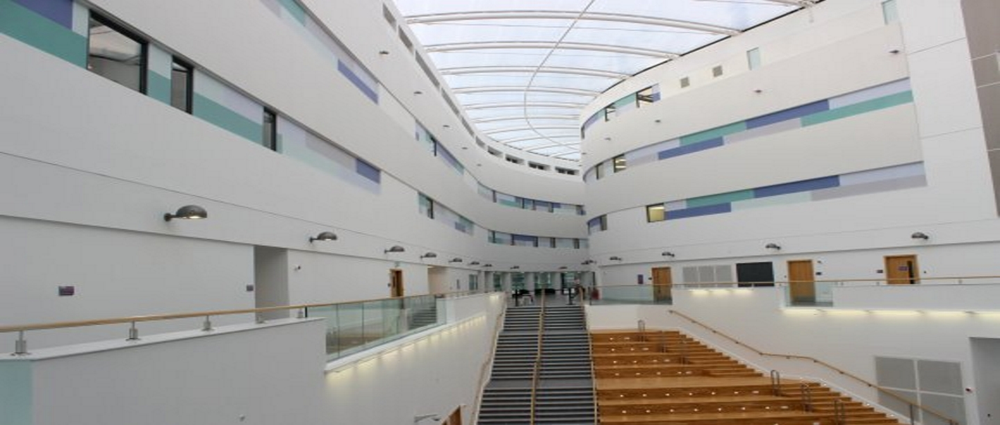
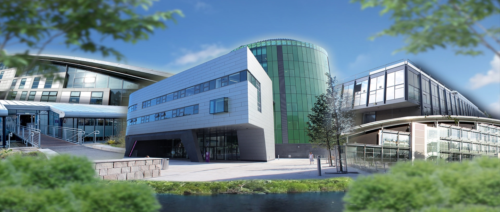
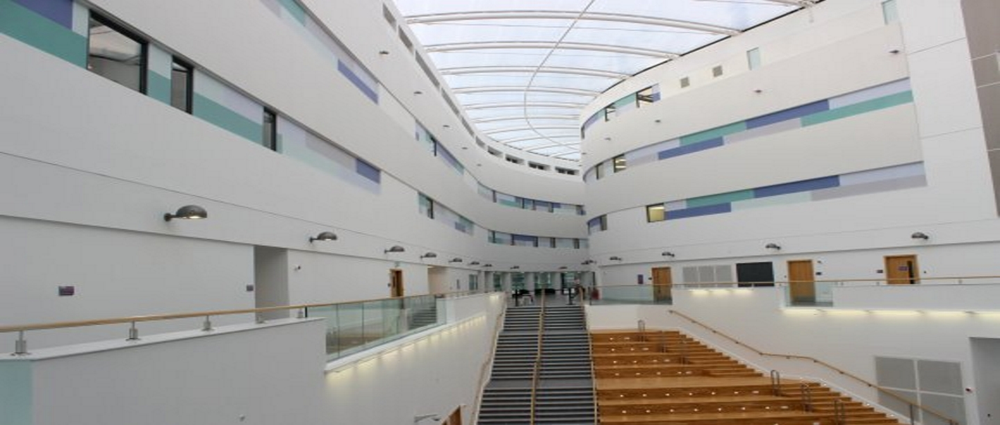
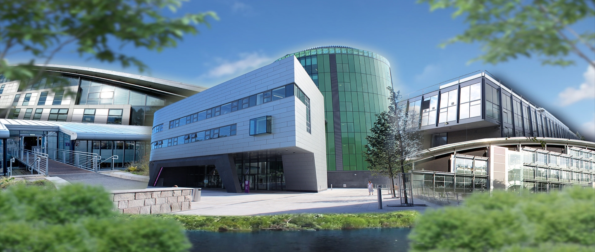

Computing is high impact, with a global reach that shapes every aspect of today’s society.
We take a dynamic and innovative approach to teaching the technologies needed to address 21st century challenges. Computing is always on the move, offering a direct, creative and inspiring route into stimulating and rewarding careers
30% of Scotland's software engineers live and work in Aberdeen.
- Make valuable connections with potential employers through stimulating placement opportunities.
- Commercial collaboration at local, national and international level ensures our teaching and project work stays up-to-date.
- Take a first foundation year to gain a broad base of practical computing skills.
- Balance theory and practice so that learning is always useful and relevant.
- Make valuable connections with potential employers through stimulating placement opportunities.
- Commercial collaboration at local, national and international level ensures our teaching and project work stays up-to-date.
- Take a first foundation year to gain a broad base of practical computing skills.
- Balance theory and practice so that learning is always useful and relevant.